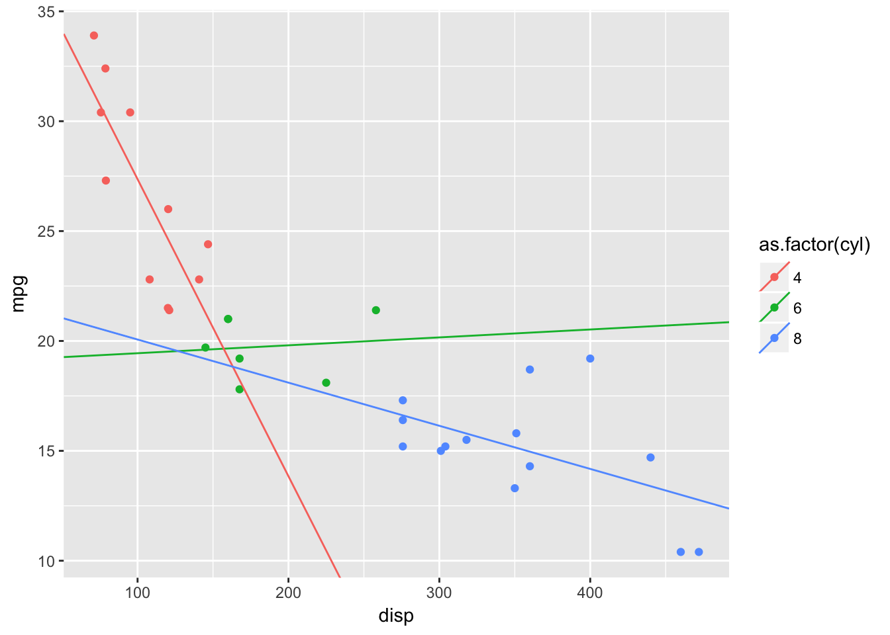
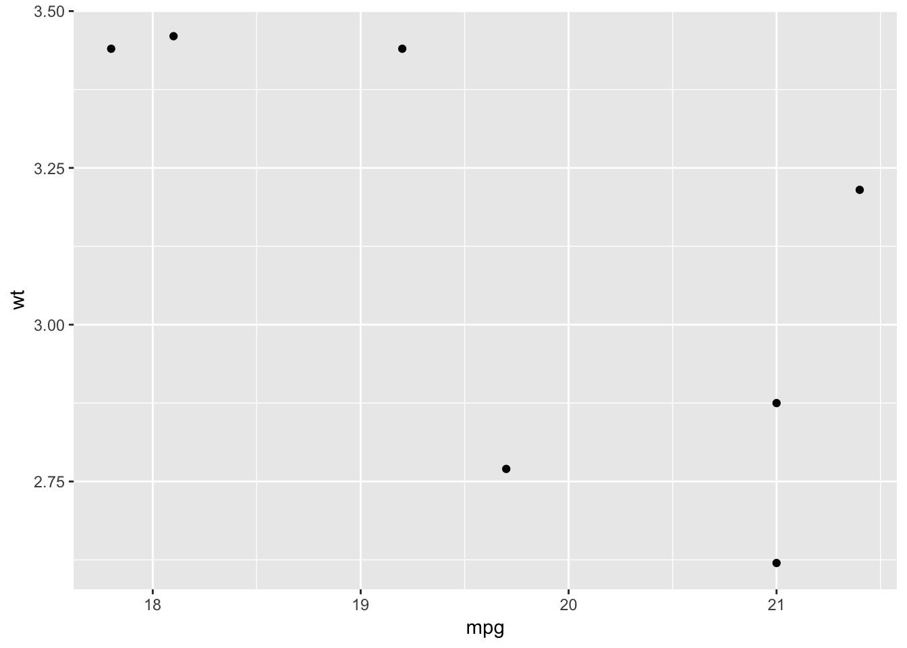

Using map Functions with purrr
Brandon Hurr’s Tutorial
The following code has been adapted from a great presentation Brandon gave at the D-RUG group in Oct 2017. See the original post and content here
Load tidyverse
suppressPackageStartupMessages(library(tidyverse))R Data types
For a nice demonstration of what vectors of different data types look like, try the code below.
# initiate blank vectors of a specific type
# this can be useful when capturing data from for loops
a <- vector("logical", 5)
a## [1] FALSE FALSE FALSE FALSE FALSEb <- vector("integer", 4)
b## [1] 0 0 0 0c <- vector("double", 2) # can also use "numeric"
c## [1] 0 0d <- vector("character", 10)
d## [1] "" "" "" "" "" "" "" "" "" ""e <- vector("complex", 7)
e## [1] 0+0i 0+0i 0+0i 0+0i 0+0i 0+0i 0+0if <- vector("raw", 3)
f## [1] 00 00 00g <- list()
g## list()NA’s in R
NA’s are a common issue in dealing with data from various places (remember spreadsheet lesson?). R deals well with NA’s and even provides different NA’s for different data types.
#what do the NAs look like?
list(NA, NA_integer_, NA_real_, NA_character_, NA_complex_)## [[1]]
## [1] NA
##
## [[2]]
## [1] NA
##
## [[3]]
## [1] NA
##
## [[4]]
## [1] NA
##
## [[5]]
## [1] NAThe NULL element
# NULL is the absence of a vector
a <- c(TRUE, FALSE, TRUE, FALSE, FALSE, NA) # logical vector
a## [1] TRUE FALSE TRUE FALSE FALSE NAa <- NULL
a## NULL# let's use mtcars as example of making a column NULL
head(mtcars)## mpg cyl disp hp drat wt qsec vs am gear carb
## Mazda RX4 21.0 6 160 110 3.90 2.620 16.46 0 1 4 4
## Mazda RX4 Wag 21.0 6 160 110 3.90 2.875 17.02 0 1 4 4
## Datsun 710 22.8 4 108 93 3.85 2.320 18.61 1 1 4 1
## Hornet 4 Drive 21.4 6 258 110 3.08 3.215 19.44 1 0 3 1
## Hornet Sportabout 18.7 8 360 175 3.15 3.440 17.02 0 0 3 2
## Valiant 18.1 6 225 105 2.76 3.460 20.22 1 0 3 1dim(mtcars) # how many rows, cols## [1] 32 11# assign NULL to a given column to remove it
mtcars[1] <- NULL #this gets rid of the mpg column completely
head(mtcars)## cyl disp hp drat wt qsec vs am gear carb
## Mazda RX4 6 160 110 3.90 2.620 16.46 0 1 4 4
## Mazda RX4 Wag 6 160 110 3.90 2.875 17.02 0 1 4 4
## Datsun 710 4 108 93 3.85 2.320 18.61 1 1 4 1
## Hornet 4 Drive 6 258 110 3.08 3.215 19.44 1 0 3 1
## Hornet Sportabout 8 360 175 3.15 3.440 17.02 0 0 3 2
## Valiant 6 225 105 2.76 3.460 20.22 1 0 3 1dim(mtcars) # how many rows, cols## [1] 32 10data(mtcars) # restore full mtcars dataset
dim(mtcars) # how many rows, cols## [1] 32 11Lists in R
Now that we have an idea what different vectors are, let’s talk about how to make them into lists.

Lists can contain anything of any length, and data.frames are a special type of list.
Vectors to Lists: dataframes & tibbles
# let's put actual values into these
a <- c(TRUE, FALSE, TRUE, FALSE, FALSE, NA) # a logical vector 6 items long
b <- c(1:7, NA_integer_) # Integers
c <- c(rnorm(8), NA_real_) # pull doubles from normal distribution
d <- c(LETTERS[1:3], NA_character_) # first 3 capital letters
e <- list(a, b, c, d) #make a list
e # check it## [[1]]
## [1] TRUE FALSE TRUE FALSE FALSE NA
##
## [[2]]
## [1] 1 2 3 4 5 6 7 NA
##
## [[3]]
## [1] -0.8651108 0.1631561 0.7575487 0.1855140 -0.7981243 1.5257396
## [7] -1.7689039 -0.5517413 NA
##
## [[4]]
## [1] "A" "B" "C" NA# Lists can contain anything of any length
## data.frame is a special type of list
## data.frame rows imply association so they need to line up
data.frame(a, b) # uh oh## Error in data.frame(a, b): arguments imply differing number of rows: 6, 8a <- c(TRUE, FALSE, TRUE, FALSE, FALSE, NA, NA, NA) # make it 8 like b
df <- data.frame(a = a, b = b)
df ## a b
## 1 TRUE 1
## 2 FALSE 2
## 3 TRUE 3
## 4 FALSE 4
## 5 FALSE 5
## 6 NA 6
## 7 NA 7
## 8 NA NAtibbles are data.frames with some stricter rules: - slightly more informative printing (not shown well here) - strict behavior around subsetting [ -> tibble [[ vector - does not partially match column names (b/c this can get you into trouble)
as_tibble(df)## # A tibble: 8 x 2
## a b
## <lgl> <int>
## 1 TRUE 1
## 2 FALSE 2
## 3 TRUE 3
## 4 FALSE 4
## 5 FALSE 5
## 6 NA 6
## 7 NA 7
## 8 NA NASee presentation, SLIDE:
Accessing elements inside vectors, lists, dataframes, and tibbles
#atomic vectors
a <- c(TRUE, FALSE, TRUE, FALSE, FALSE, NA) #logic vector
a
a[1]
a[[1]] # does the same thing
a[[[1]]] # nope just stop adding brackets!
# lists
list_example <- list(a = a, b = b, c = c, d = d, e = list(1, "A")) #make a named list
list_example
# single brackets returns a list with that element in it
# can reference by location or by name
list_example[1]
list_example["a"]
# double brackets return a vector
list_example[[2]]
list_example[["b"]]
#stack [['s to peel the onion back
list_example[["e"]] # remove one layer
list_example[["e"]][[2]] # remove the second layer (access e list, and 2 item in that list)
#dolla dolla bills y'all (works like [[, with named vectors)
list_example$c
#same for dataframes
mtcars[1]
mtcars[[1]]
# and for tibbles
tbbl <- tibble(x = 1:3, y = LETTERS[1:3])
tbbl[1]
tbbl["x"]
tbbl[[2]]
tbbl[["y"]]## Error: <text>:7:4: unexpected '['
## 6: a[[1]] # does the same thing
## 7: a[[[
## ^See presentation, SLIDE:
Functions and for Loops
Functions
When should we make a function in R?
#Simple dataframe
df <- data.frame(
a = rnorm(10),
b = rnorm(10),
c = rnorm(10),
d = rnorm(10)
)
# What are we doing here?
df$a <- (df$a - min(df$a, na.rm = TRUE)) /
(max(df$a, na.rm = TRUE) - min(df$a, na.rm = TRUE))
df$b <- (df$b - min(df$b, na.rm = TRUE)) /
(max(df$b, na.rm = TRUE) - min(df$b, na.rm = TRUE))
df$c <- (df$c - min(df$a, na.rm = TRUE)) /
(max(df$c, na.rm = TRUE) - min(df$c, na.rm = TRUE))
df$d <- (df$d - min(df$d, na.rm = TRUE)) /
(max(df$d, na.rm = TRUE) - min(df$d, na.rm = TRUE))Anytime we need to do the same thing 3 or more times, it would probably be a good idea to think about creating a function. Stepping through these pieces, here’s what we’d want to do:
First what is the calculation/task you want to do?
df$d <- (df$d - min(df$d, na.rm = TRUE)) /
(max(df$d, na.rm = TRUE) - min(df$d, na.rm = TRUE))
# exactly as aboveNow pull out the common components:
# pull out what's common
x <- (x - min(x, na.rm = TRUE)) /
(max(x, na.rm = TRUE) - min(x, na.rm = TRUE))Problem is the above isn’t a function yet, it’s just the “anonymous” calculation we want our function to follow. We can simplify even more if we want:
# simplify more and refactor if that makes sense
x <- (x - min(x, na.rm = TRUE)) /
diff(range(x, na.rm = TRUE))And now add the actual function() call!
rescale_0_1 <- function(x) {
(x - min(x, na.rm = TRUE)) /
diff(range(x, na.rm = TRUE))
}Let’s test this function and see what happens. We can test a single vector, and then actually apply our function to each column in our dataset. Use a test dataset that’s simple and we now what it should look like.
rescale_0_1 <- function(x) {
(x - min(x, na.rm = TRUE)) /
diff(range(x, na.rm = TRUE))
}
testvec <- 10:20 # so this should get rescaled from 0 to 1
testvec## [1] 10 11 12 13 14 15 16 17 18 19 20rescale_0_1(testvec) # looks like it worked, it rescaled all values from 0 to 1!## [1] 0.0 0.1 0.2 0.3 0.4 0.5 0.6 0.7 0.8 0.9 1.0df <- data.frame(
a = rnorm(10),
b = rnorm(10),
c = rnorm(10),
d = rnorm(10)
)
rescale_0_1 <- function(x) {
(x - min(x, na.rm = TRUE)) /
diff(range(x, na.rm = TRUE))
}
out <- df # rename df so we can always come back
out$a <- rescale_0_1(df$a)
out$b <- rescale_0_1(df$b)
out$c <- rescale_0_1(df$c)
out$d <- rescale_0_1(df$d)
out## a b c d
## 1 0.8207752 0.43290911 0.7371738 0.43895825
## 2 0.6228656 0.68073212 1.0000000 1.00000000
## 3 0.0000000 0.79957920 0.4428712 0.77617654
## 4 0.9723748 0.38332367 0.5553486 0.59164455
## 5 0.6782132 0.32195999 0.1182635 0.40936363
## 6 0.4160803 0.00000000 0.7577814 0.37206187
## 7 1.0000000 1.00000000 0.0000000 0.62780416
## 8 0.8899215 0.67296415 0.4357569 0.10072500
## 9 0.5756084 0.29736475 0.7724630 0.07516623
## 10 0.8774973 0.01645077 0.1201067 0.00000000for Loops to apply a function
Reduce iteration with a for loop, which takes a vector or list, and interates or steps through each piece of that vector/list, does something and returns values/data.
out <- df #make a copy to store scaled data
for (i in 1:ncol(df)) { # loop through each element
out[i] <- rescale_0_1(df[[i]]) #apply function and store it to out
}
out## a b c d
## 1 0.8207752 0.43290911 0.7371738 0.43895825
## 2 0.6228656 0.68073212 1.0000000 1.00000000
## 3 0.0000000 0.79957920 0.4428712 0.77617654
## 4 0.9723748 0.38332367 0.5553486 0.59164455
## 5 0.6782132 0.32195999 0.1182635 0.40936363
## 6 0.4160803 0.00000000 0.7577814 0.37206187
## 7 1.0000000 1.00000000 0.0000000 0.62780416
## 8 0.8899215 0.67296415 0.4357569 0.10072500
## 9 0.5756084 0.29736475 0.7724630 0.07516623
## 10 0.8774973 0.01645077 0.1201067 0.00000000Using seq_along
Handy command that sequences along a list for you, so you don’t have to specify columns or rows, or series of numbers.
out <- df #make a copy to store scaled data
for (i in seq_along(df)) {
out[i] <- rescale_0_1(df[[i]])
}
out## a b c d
## 1 0.8207752 0.43290911 0.7371738 0.43895825
## 2 0.6228656 0.68073212 1.0000000 1.00000000
## 3 0.0000000 0.79957920 0.4428712 0.77617654
## 4 0.9723748 0.38332367 0.5553486 0.59164455
## 5 0.6782132 0.32195999 0.1182635 0.40936363
## 6 0.4160803 0.00000000 0.7577814 0.37206187
## 7 1.0000000 1.00000000 0.0000000 0.62780416
## 8 0.8899215 0.67296415 0.4357569 0.10072500
## 9 0.5756084 0.29736475 0.7724630 0.07516623
## 10 0.8774973 0.01645077 0.1201067 0.00000000map and apply Functions
There are a family of functions called apply (mapply, sapply, lapply, vapply) which essentially take a list of something and apply a function or operation on each item in that list. These are base functions in R, but a newer set of functions (which do the same thing & more) have been written in R, called the map functions. Let’s see how they migth work.
apply
df_app1 <- apply(df, MARGIN = 2, function(x) rescale_0_1(x)) # iterate over the columns in df
class(df_app1) # returns a matrix## [1] "matrix"df_app2 <- sapply(df, function(x) rescale_0_1(x)) # same as above but defaults to colsOkay so apply returns a matrix. What about map?
map
df_map1<- map(df, function(x) rescale_0_1(x)) #map over the columns in df
class(df_map1) # returns a list! Keeps same format that was input## [1] "list"df_map2 <- map_df(df, rescale_0_1) # returns a dataframe!Let’s look at another more simple example.
Specifying Outputs with map
Another set of examples below will help us understand how map makes it easy to get different data classes (matrix,list, dataframe) back out. The default map function takes a list and returns a list, but there are various options that allow you to specify what you want.
This example creates a list containing two integer vectors. Let’s say we want the mean of each one:
l = list(a=1:10, b = 10:100)
map(l, function(x) mean(x, na.rm = TRUE)) # and this is returning a list (list in, list out)## $a
## [1] 5.5
##
## $b
## [1] 55Get numeric double type back
Specify and you get a vector back instead of a list
l = list(a=1:10, b = 10:100)
map_dbl(l, function(x) mean(x, na.rm = TRUE)) # this is a numeric vector## a b
## 5.5 55.0Get character back
Maybe not so useful, but demonstrates the point.
map_chr(l, function(x) mean(x, na.rm = TRUE))## a b
## "5.500000" "55.000000"Use Error Messages: Type-strict functions
So if you have or try to use the wrong type of data, the function won’t run.
l = list(a=1:10, b = 10:100)
map_lgl(l, function(x) mean(x, na.rm = TRUE))## Error: Can't coerce element 1 from a double to a logicalMore map Examples
map Use Case #1: Read in files
Based upon this tutorial http://data.library.virginia.edu/getting-started-with-the-purrr-package-in-r/
# this will work if you clone the github repository
fileloc <- file.path(getwd(), "stocks")
#create a list of files to read in that end in csv
files <- list.files(fileloc, pattern = "csv$", full.names = TRUE)
#this reads in each csv independently into a list
dat2 <- map(files, read_csv)
dat2## list()Let’s make it a function
fileloc <- file.path(getwd(), "stocks")
read_folder <- function(folder) {
# get files that end with csv or CSV
files <- list.files(folder, pattern = "(csv|CSV)$", full.names = TRUE)
#this reads in each csv independently into a list
map(files, read_csv) # last thing is returned
}
read_folder(fileloc)## list()What if you want to change the type of file you’re reading?
fileloc <- file.path(getwd(), "stocks")
read_folder <- function(folder, pattern, read_fun) {
# get files that end with csv or CSV
files <- list.files(folder, pattern = pattern, full.names = TRUE)
#this reads in each csv independently into a list
map(files, read_fun)
}
read_folder(folder = fileloc, pattern = "(csv|CSV)$", read_fun = read_csv)## list()# OR more succinctly
# read_folder(fileloc, "(csv|CSV)$", read_csv)Combine Files and Label By Filenames
If there are multiple files but all have same structure (same number of columns/column types), we can read in separately and then combine. But add the filename of each dataset as a new column variable.
fileloc <- file.path(getwd(), "stocks")
# This function reads a file and appends a column called "name" for ID
read_fun <- function(file, FUN) {
dat <- FUN(file) # read in file
dat$name <- tools::file_path_sans_ext(basename(file)) #record the filename for later grouping
dat #bring data back
}
# This function reads a folder for files of given pattern
# then applies the given read function to read them in read_fun
read_files_bind <- function(folder, pattern, FUN) {
# get files that end with csv or CSV
files <- list.files(folder, pattern = pattern, full.names = TRUE)
map_dfr(files, read_fun, FUN)
}
# Read everything in at once and bind it all together
read_files_bind(folder = fileloc, pattern = "(csv|CSV)$", FUN = read_csv)## # A tibble: 0 x 0Lists & List columns
Ok, so we can get data into our environment in a list, but what then? There are a number of ways to deal with these data, or to deal with lists within dataframes…called list columns.
tidyr::nest() embeds tibbles in a column
See how to group by something and then create a list-columns that hold each dataframe for that group.
cars_nested <-
mtcars %>% # motortrend car dataset
group_by(cyl) %>% # group by cylinder
nest(.key = "data") # nest data by cyl, default key is "data"
cars_nested## # A tibble: 3 x 2
## cyl data
## <dbl> <list>
## 1 6 <tibble [7 x 10]>
## 2 4 <tibble [11 x 10]>
## 3 8 <tibble [14 x 10]>Interacting with list-data using map
Use map!. Let’s make a linear model for each subset, pull out the coefficients with broom, and plot them.
library(broom)
mtc_modeled <-
mtcars %>% # motortrend car dataset
group_by(cyl) %>% # group by cylinder
nest(.key = "data") %>% # nest data by cyl, default key is "data"
mutate(model = map(data, ~ lm(mpg ~ disp, data = .x))) %>% # make models
mutate(coeff = map(model, tidy)) %>% #pull out coefficients
mutate(slope = map_dbl(coeff, ~ pull(.x, estimate)[2])) %>% # pull slope from coefficients
mutate(intercept = map_dbl(coeff, ~ pull(.x, estimate)[1])) # pull intercept from coefficients
ggplot() +
# plot the original data
geom_point(data = mtcars, aes(x = disp, y = mpg, color = as.factor(cyl))) +
# plot the models
geom_abline(data = mtc_modeled, aes(slope = slope, intercept = intercept, color = as.factor(cyl)))
See presentation, SLIDE:
Iterating over more than one list with map2 and pmap
n = list(5,10,20)
mu = list(50,30,10)
sd = list(10,5,1)
# how does it look as we go from map to map2 to pmap?
map(n, rnorm)## [[1]]
## [1] 1.4768703 -0.1533959 0.2396748 0.2402409 -0.2077689
##
## [[2]]
## [1] -0.05247839 0.62911017 -0.88469193 1.59996856 -0.30069734
## [6] -1.18289173 2.27563636 2.19755601 -0.66035239 -0.63136664
##
## [[3]]
## [1] -0.25985335 1.29166039 -0.16565655 -0.86726524 -1.33504355
## [6] -1.47486375 -0.21736759 -1.33822398 1.31132023 -0.60264571
## [11] 1.64107207 0.05055839 0.77276881 -0.96325037 0.16046060
## [16] -2.07450922 -1.91818065 1.14723890 1.00709912 0.17312155map2(n, mu, rnorm)## [[1]]
## [1] 48.54670 50.59173 50.00327 49.75617 50.45421
##
## [[2]]
## [1] 30.78797 31.16257 29.40269 28.26594 30.37638 29.89839 30.24365
## [8] 29.99393 30.80376 30.87279
##
## [[3]]
## [1] 11.044155 11.511773 11.025745 10.078490 12.782987 9.370071 9.744581
## [8] 9.582240 10.158940 8.396422 11.424147 8.579763 10.339949 10.763439
## [15] 9.139641 9.441236 9.913024 10.981064 9.874723 9.053330pmap(list(n, mu, sd), rnorm)## [[1]]
## [1] 60.21579 46.40633 45.26419 48.69170 29.17810
##
## [[2]]
## [1] 25.42173 20.89853 19.10881 37.61970 28.79060 27.34891 29.06953
## [8] 30.51019 28.86502 29.63786
##
## [[3]]
## [1] 11.189231 11.247469 10.521035 9.856616 8.318161 9.583018 10.274564
## [8] 11.925249 9.908933 10.044569 10.537355 10.473546 10.670373 10.295606
## [15] 10.497547 11.513199 7.699350 10.216416 10.577524 10.754320#technically, pmap can do it all
pmap(list(n), rnorm)## [[1]]
## [1] 1.6743419 0.5906887 -0.2383763 -0.7228013 0.3115667
##
## [[2]]
## [1] 0.6112044 -0.4594662 -0.1088584 -0.6394529 -1.0790912 -0.1658900
## [7] -0.5537572 0.1748168 -0.4740842 0.8942303
##
## [[3]]
## [1] 0.08824759 1.69491559 0.63812594 0.51607932 -1.83405438
## [6] 0.82233400 -0.56177874 -0.26776757 2.24927224 -1.19641876
## [11] -0.60144344 -0.49115629 1.66839832 -0.22908095 0.89472403
## [16] -1.42507946 -1.71824775 -1.02668013 1.24374182 -0.70820907pmap(list(n, mu), rnorm)## [[1]]
## [1] 51.59252 50.77109 49.32877 50.02599 49.88678
##
## [[2]]
## [1] 29.97268 31.12543 30.43548 30.72164 29.28568 29.91871 31.21520
## [8] 28.37895 29.83291 27.77109
##
## [[3]]
## [1] 9.841227 10.090712 11.006969 9.193296 9.013008 10.257081 11.401105
## [8] 10.586343 10.150945 8.981446 11.173479 10.784236 9.713015 9.728073
## [15] 8.229543 12.219423 10.689129 8.888268 9.683102 8.437784# formula interface
map(n, ~rnorm(.))## [[1]]
## [1] -1.0253794 0.7547295 -0.1129269 -0.1010053 -0.2318647
##
## [[2]]
## [1] -0.75319884 -0.47850360 -1.50549946 0.39523424 -0.41974828
## [6] 0.09680549 -0.36860617 -0.68998751 0.37844557 -0.92323009
##
## [[3]]
## [1] -0.24591291 2.00960827 -0.75714007 1.32378064 0.44370772
## [6] -1.23360315 0.18500252 0.39762879 0.14289692 0.79869461
## [11] 0.64890860 0.03435417 -0.08699145 1.35779602 0.12434992
## [16] -0.43244888 1.54658493 0.13544102 1.90652781 -0.06429383map2(n, mu, ~ rnorm(.x, .y))## [[1]]
## [1] 50.27556 49.06252 49.99540 50.05685 51.16831
##
## [[2]]
## [1] 29.41794 29.18751 31.07704 31.30368 28.63855 29.99805 28.27857
## [8] 30.51415 30.08255 30.97083
##
## [[3]]
## [1] 9.091227 9.308521 8.736555 9.495450 7.842426 13.314138 9.481121
## [8] 10.437733 10.202052 9.989584 10.674737 8.003617 9.083636 10.859232
## [15] 10.342497 8.630701 10.660202 9.228128 10.559359 9.194145pmap(list(n, mu, sd), ~rnorm(..1, ..2, ..3)) # ..4 and so on for as many as you need## [[1]]
## [1] 38.45031 52.81602 50.99568 61.79909 56.34076
##
## [[2]]
## [1] 36.66280 32.64799 34.51709 34.31619 28.13025 35.24909 33.78099
## [8] 30.04235 29.24031 36.93536
##
## [[3]]
## [1] 10.431623 9.342936 11.457605 10.685423 10.333920 11.572697 12.195179
## [8] 10.837334 9.545745 10.802861 8.927582 10.085641 10.694308 9.743992
## [15] 9.635709 10.067848 9.947924 8.209404 10.255774 10.453293# CAUTION: position matters with map2 & pmap
map2(n, mu, rnorm)## [[1]]
## [1] 50.25973 48.63761 51.01387 51.43565 50.22203
##
## [[2]]
## [1] 30.74727 29.24182 28.59790 30.23012 30.22110 29.25163 31.21307
## [8] 30.35769 29.41959 29.68153
##
## [[3]]
## [1] 10.473262 9.989378 9.008948 9.281208 8.037053 11.205079 9.856961
## [8] 9.801129 9.150258 9.699877 10.093871 8.492011 9.519141 10.864316
## [15] 8.573621 8.227408 10.252127 8.127659 11.273364 9.537162map2(mu, n, rnorm)## [[1]]
## [1] 3.875211 5.474346 5.162325 5.184171 5.788494 3.835505 7.570435
## [8] 5.967825 3.248358 5.252940 4.881847 6.172477 3.772445 5.081889
## [15] 4.783596 7.275792 7.594532 4.859897 4.769137 5.376831 5.605773
## [22] 4.573446 6.394533 4.978607 2.517049 4.119955 4.899089 3.678623
## [29] 5.066485 4.604867 6.049062 6.627879 4.029749 4.535380 5.752351
## [36] 4.803157 4.285435 4.411271 5.311944 4.076320 3.204840 5.641990
## [43] 5.328853 6.100534 3.920426 5.646253 5.918620 5.607403 5.883211
## [50] 6.811019
##
## [[2]]
## [1] 8.882975 11.110725 9.310308 9.822325 11.332727 9.384830 9.812571
## [8] 9.956442 9.269623 10.401821 9.456735 9.896822 10.262176 9.542839
## [15] 10.870443 9.818270 10.548827 8.281902 9.428260 9.092218 8.517985
## [22] 11.302470 9.023226 10.282410 10.284101 10.646787 10.621225 12.054209
## [29] 9.502485 9.129787
##
## [[3]]
## [1] 17.88910 20.68889 20.47802 20.85465 20.39209 21.46888 19.77250
## [8] 19.08281 20.15125 20.55789pmap(list(n, mu, sd), rnorm)## [[1]]
## [1] 56.45395 54.36934 37.06240 18.36399 62.06271
##
## [[2]]
## [1] 25.38967 27.77635 26.79652 32.53486 26.05234 25.39013 28.43014
## [8] 24.29151 28.40957 23.14987
##
## [[3]]
## [1] 9.003041 11.121387 8.743585 10.278424 9.726667 9.810071 8.935496
## [8] 9.797090 9.668132 8.953855 7.939918 11.830021 10.574065 9.159248
## [15] 8.506585 9.244463 11.323323 9.564751 9.221630 10.423535pmap(list(mu, n, sd), rnorm)## [[1]]
## [1] -6.0458712 11.3768528 -8.8455157 4.0748782 8.6269389
## [6] 2.3866227 -0.3765983 -3.4133414 12.0032059 10.4337296
## [11] 0.7228497 -1.9822979 -5.9879225 7.4906875 9.0575604
## [16] -9.6945317 5.8676850 7.4765866 -7.2351108 7.8705944
## [21] 5.0018483 -3.1792521 -14.3542237 17.9930969 13.5129234
## [26] -5.4209230 18.7649652 24.5093335 28.0131930 2.4939093
## [31] 16.0574613 2.1720721 -3.6833043 0.0295888 -1.7839788
## [36] -10.2955003 27.4708526 26.3268898 -13.4900544 -12.9562197
## [41] -0.9313159 -23.4264579 2.6907765 20.5398610 10.6773617
## [46] -11.7232879 -7.0582025 28.4048372 5.7392067 4.0862554
##
## [[2]]
## [1] 14.6115696 13.7462684 5.0078336 2.7360015 10.6302522 7.9540292
## [7] 12.3436987 10.9031262 8.7902742 15.4896978 8.0434691 -0.5580261
## [13] 11.6237958 8.1969638 2.3154474 2.3227000 11.6625586 4.3237565
## [19] 11.4009993 9.7368890 2.2172568 17.7780659 9.2804734 7.7427653
## [25] 17.2846233 5.4502515 7.0844907 8.0682306 7.9101075 6.1424334
##
## [[3]]
## [1] 19.45309 19.47684 21.47916 19.18732 21.82581 19.93036 19.60598
## [8] 18.85333 21.68092 20.44700# if you need non-default ordering, specify with full function call
map2(mu, n, function(x, y) rnorm(y, x))## [[1]]
## [1] 50.03889 49.94476 48.98322 48.51922 49.27985
##
## [[2]]
## [1] 29.30518 31.22317 28.62083 30.69993 28.93191 29.55604 29.73312
## [8] 29.94260 29.35171 30.94903
##
## [[3]]
## [1] 10.474034 9.006908 9.154000 9.569446 9.344571 9.850153 12.677612
## [8] 10.213612 10.505118 9.750781 9.405815 8.581473 10.534423 10.284895
## [15] 8.194021 8.777844 9.662300 8.931754 9.682779 8.739000# or using the formula interface
map2(mu, n, ~ rnorm(.y, .x))## [[1]]
## [1] 49.25603 51.24131 50.18612 50.36180 49.38347
##
## [[2]]
## [1] 29.85964 29.18054 30.17130 29.59394 29.41142 30.33886 30.73386
## [8] 28.74958 30.16552 29.07058
##
## [[3]]
## [1] 9.694206 11.355693 7.905123 10.536021 10.720279 9.803345 10.523817
## [8] 9.331800 8.393273 11.477873 10.843439 11.645193 9.823439 8.422545
## [15] 9.284359 9.776196 11.340587 10.073606 10.911216 10.649954# pmap you can name your list to get around positional ordering
pmap(list(mean=mu, n=n, sd=sd), rnorm)## [[1]]
## [1] 35.28244 38.27587 46.88812 39.65459 49.97719
##
## [[2]]
## [1] 24.93864 35.53905 29.38443 38.09507 33.16624 29.47500 39.85592
## [8] 28.57115 30.30249 22.02181
##
## [[3]]
## [1] 10.184844 9.628788 11.711726 10.767795 10.824763 8.336109 10.647370
## [8] 9.969834 9.891687 9.281672 12.961162 10.173852 10.236815 8.722754
## [15] 11.183610 9.037304 10.134103 9.275650 9.850321 10.549545# OR you can specify with a full function call
pmap(list(mu, n, sd), function(mu, n, sd) rnorm(n, mu, sd))## [[1]]
## [1] 50.23282 50.55791 40.26995 48.22113 54.55200
##
## [[2]]
## [1] 36.24159 21.01382 28.41700 33.25130 43.52293 34.04032 34.71545
## [8] 27.23005 32.55908 30.70984
##
## [[3]]
## [1] 10.419372 11.833522 10.253167 10.937142 10.017011 9.949321 10.004506
## [8] 9.089014 11.307628 11.998942 9.704686 10.467612 10.141273 10.257101
## [15] 12.075882 8.788672 9.149085 10.773548 10.027637 11.510148# OR with the formula interface
pmap(list(mu, n, sd), ~ rnorm(..2, ..1, ..3))## [[1]]
## [1] 65.21899 42.63330 43.34479 46.16218 51.92478
##
## [[2]]
## [1] 28.51534 29.82076 27.49256 32.10316 31.05131 37.46672 35.15153
## [8] 27.71547 31.24982 31.11399
##
## [[3]]
## [1] 10.296711 10.266669 10.389874 10.369666 10.440105 11.120763 11.477957
## [8] 11.619428 10.313643 10.471868 7.285020 10.786781 10.464827 11.222768
## [15] 10.666679 9.659536 9.773543 9.721890 10.034660 9.777697See presentation, SLIDE:
walk/walk2/pwalk are used to output side-effects
asdf <- list(a = LETTERS[1:10], b = 1:15, c = FALSE)
# we just want to print each element of this list
walk(asdf, print)## [1] "A" "B" "C" "D" "E" "F" "G" "H" "I" "J"
## [1] 1 2 3 4 5 6 7 8 9 10 11 12 13 14 15
## [1] FALSEOutputting Plots with map Functions
# make a simple plotting function
plot_points <- function(t) ggplot(t, aes(mpg, wt)) + geom_point()
mtcars %>% # motortrend car dataset
group_by(cyl) %>% # group by cylinder
nest(.key = "data") %>% # nest by cylinder
mutate(plot = map(data, plot_points)) %>% # we made a graph for each subset
pull(plot) %>% #pull the plots out as a list
walk(., print) # print them


Save Plots from walk with walk2/pwalk
# make a simple plotting function
plot_points <- function(t) ggplot(t, aes(mpg, wt)) + geom_point()
mtc_plot_n_save <-
mtcars %>% # motortrend car dataset
group_by(cyl) %>% # group by cylinder
nest(.key = "data") %>% # nest by cylinder
mutate(plot = map(data, plot_points)) %>% # we made a graph for each subset
mutate(filepath = map_chr(cyl, ~ file.path("figures", paste0(.x, ".png")))) #make the save paths
walk2(mtc_plot_n_save$plot, mtc_plot_n_save$filepath, ~ ggsave(.y, .x)) # save them out## Saving 7 x 5 in image
## Saving 7 x 5 in image
## Saving 7 x 5 in imageThat is great! Ok, let’s make this a bit fancier. With pwalk we can have a bunch of different lists of things that get mapped…not just 1 or 2.
# make a simple plotting function
plot_points <- function(t) ggplot(t, aes(mpg, wt)) + geom_point()
#function that prints cylinder info, ggplot, and table
print_func <-
function(info, plot, table, filepath) {
print(paste0("This is for ", info, " cylinders./n"))
print(plot)
ggsave(filepath)
print(table)
}
mtc_plot_n_save <-
mtcars %>% # motortrend car dataset
group_by(cyl) %>% # group by cylinder
nest(.key = "data") %>% # nest by cylinder
mutate(plot = map(data, plot_points)) %>% # we made a graph for each subset
mutate(filepath = map_chr(cyl, ~ file.path("figures", paste0(.x, ".png")))) # make the save paths
# print all the info
pwalk(list(info = mtc_plot_n_save$cyl, plot = mtc_plot_n_save$plot, table = mtc_plot_n_save$data, filepath = mtc_plot_n_save$filepath), print_func) ## [1] "This is for 6 cylinders./n"## Saving 7 x 5 in image
## # A tibble: 7 x 10
## mpg disp hp drat wt qsec vs am gear carb
## <dbl> <dbl> <dbl> <dbl> <dbl> <dbl> <dbl> <dbl> <dbl> <dbl>
## 1 21.0 160.0 110 3.90 2.620 16.46 0 1 4 4
## 2 21.0 160.0 110 3.90 2.875 17.02 0 1 4 4
## 3 21.4 258.0 110 3.08 3.215 19.44 1 0 3 1
## 4 18.1 225.0 105 2.76 3.460 20.22 1 0 3 1
## 5 19.2 167.6 123 3.92 3.440 18.30 1 0 4 4
## 6 17.8 167.6 123 3.92 3.440 18.90 1 0 4 4
## 7 19.7 145.0 175 3.62 2.770 15.50 0 1 5 6
## [1] "This is for 4 cylinders./n"## Saving 7 x 5 in image
## # A tibble: 11 x 10
## mpg disp hp drat wt qsec vs am gear carb
## <dbl> <dbl> <dbl> <dbl> <dbl> <dbl> <dbl> <dbl> <dbl> <dbl>
## 1 22.8 108.0 93 3.85 2.320 18.61 1 1 4 1
## 2 24.4 146.7 62 3.69 3.190 20.00 1 0 4 2
## 3 22.8 140.8 95 3.92 3.150 22.90 1 0 4 2
## 4 32.4 78.7 66 4.08 2.200 19.47 1 1 4 1
## 5 30.4 75.7 52 4.93 1.615 18.52 1 1 4 2
## 6 33.9 71.1 65 4.22 1.835 19.90 1 1 4 1
## 7 21.5 120.1 97 3.70 2.465 20.01 1 0 3 1
## 8 27.3 79.0 66 4.08 1.935 18.90 1 1 4 1
## 9 26.0 120.3 91 4.43 2.140 16.70 0 1 5 2
## 10 30.4 95.1 113 3.77 1.513 16.90 1 1 5 2
## 11 21.4 121.0 109 4.11 2.780 18.60 1 1 4 2
## [1] "This is for 8 cylinders./n"## Saving 7 x 5 in image
## # A tibble: 14 x 10
## mpg disp hp drat wt qsec vs am gear carb
## <dbl> <dbl> <dbl> <dbl> <dbl> <dbl> <dbl> <dbl> <dbl> <dbl>
## 1 18.7 360.0 175 3.15 3.440 17.02 0 0 3 2
## 2 14.3 360.0 245 3.21 3.570 15.84 0 0 3 4
## 3 16.4 275.8 180 3.07 4.070 17.40 0 0 3 3
## 4 17.3 275.8 180 3.07 3.730 17.60 0 0 3 3
## 5 15.2 275.8 180 3.07 3.780 18.00 0 0 3 3
## 6 10.4 472.0 205 2.93 5.250 17.98 0 0 3 4
## 7 10.4 460.0 215 3.00 5.424 17.82 0 0 3 4
## 8 14.7 440.0 230 3.23 5.345 17.42 0 0 3 4
## 9 15.5 318.0 150 2.76 3.520 16.87 0 0 3 2
## 10 15.2 304.0 150 3.15 3.435 17.30 0 0 3 2
## 11 13.3 350.0 245 3.73 3.840 15.41 0 0 3 4
## 12 19.2 400.0 175 3.08 3.845 17.05 0 0 3 2
## 13 15.8 351.0 264 4.22 3.170 14.50 0 1 5 4
## 14 15.0 301.0 335 3.54 3.570 14.60 0 1 5 8